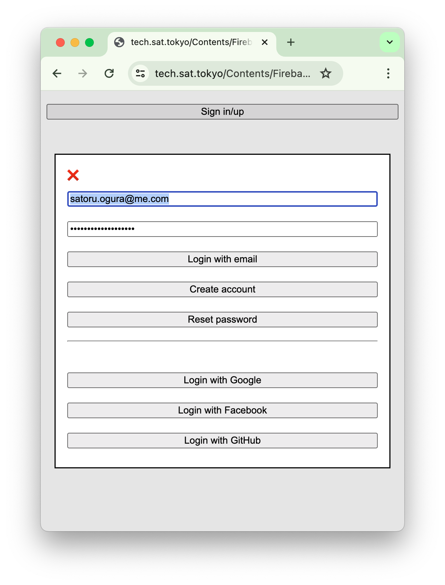
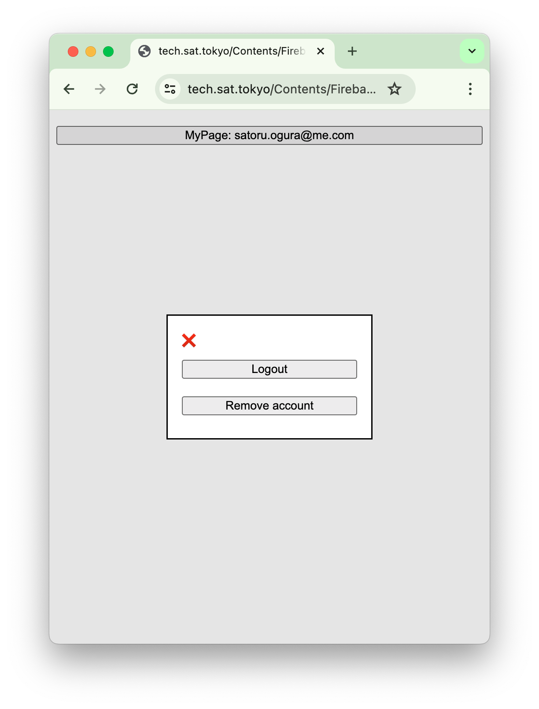

In recent years, the development of cloud services has created an environment where individuals can easily start their own membership-based online services.
In particular, using a Backend as a Service (BaaS) like Firebase allows developers to greatly simplify the complex process of building a backend.
Firebase provides many of the features needed to build an online service, such as authentication, database, file storage, and serverless functions, allowing developers to focus on the core functionality of their service.
Firebase also automatically scales with service growth, which can significantly reduce operational costs.
In this article, I will explain the specific steps for starting a membership-based online service as an individual using Firebase, while creating a fictitious service with slightly relaxed security as an example.

The source code is available on GitHub and service is available at https://exp-fb-c223c.web.app/.
Firebase is a powerful platform that facilitates app development. However, it's currently undergoing frequent updates, notably transitioning to v9, which introduces the Modular API. This new API significantly alters the syntax from the traditional one.
While the Modular API offers enhanced flexibility and efficiency, it breaks compatibility with legacy code. Although compat versions are provided by the Firebase team, migrating to the Modular API is recommended for future-proofing your projects.
Firebase includes Firebase-UI, a handy UI library for implementing features like login. However, Firebase-UI doesn't support the Modular API yet, necessitating a potentially time-consuming migration process.
Given Firebase's ongoing evolution, anticipate further significant changes in the future.
Considering this evolving landscape, directly utilizing Firebase's features to implement login functionality emerges as the most sustainable approach.
 By embracing the latest Firebase developments and implementing login functionality directly, developers can ensure their applications' longevity and adaptability.
For the code, HTML and CSS are provided on CodePen. JavaScript follows separately since Firebase doesn't function within CodePen. You can view a working version here.
See the Pen Firebase AUTH by Satachito (@satachito) on CodePen.
If a user creates an account using createUserWithEmailAndPassword, signInWithPopup, or signInWithRedirect, the email may not be verified immediately (except when using GoogleAuthProvider).
The signOut method can be used to reflect email verification status changes in the auth user object, as it requires the user to log in again.
Since September 2023, Firebase has introduced Email Enumeration Protection, a feature that fortifies login functionality against traditional attacks, enhancing user security.
In traditional login systems, attackers try various email addresses with random passwords. By analyzing error messages, they can discern whether an email address is registered, thus exploiting the system's vulnerabilities.
This feature ensures that all login attempts, regardless of password accuracy, return a generic "Invalid credentials" message. Consequently, attackers cannot determine email address validity solely based on error responses, mitigating enumeration attacks.
The following methods are affected by Email Enumeration Protection:
signInWithEmailAndPasswordfetchSignInMethodsForEmailsendPasswordResetEmailWhen enabled, fetchSignInMethodsForEmail returns an empty array, and sendPasswordResetEmail shows no error for non-existent email addresses to avoid revealing address existence.
This article assumes Email Enumeration Protection is enabled. However, note that the Firebase Auth Emulator does not support this feature, necessitating thorough deployment and debugging for authentication functionality.
In our fictional service, connecting with external APIs is crucial for functionality. However, directly connecting a client-side (web) application to external APIs presents security challenges. To overcome these hurdles, a backend service plays a vital role.
See the Pen Firebase Functions 1 by Satachito (@satachito) on CodePen.
これで動作しますが、2つの大きな問題があります。 まずは、この API が世界中のどこからでもアクセスできてしまうことです。 これを避ける方法はいくつかありますが、最も安全な Web 側で Firebase Authenticate を使って ユーザー情報を含む Token を作成して、 Authorization ヘッダーにセットして、Functions の中で Authorization ヘッダーから Token を取り出して verify する方法です。 Web側は以下のようなコードになります。Web 側
const
app = initializeApp (
// Your configuration here
)
const
auth = getAuth( app )
getIdToken( auth.currentUser, true ).then(
token => {
fetch(
'https://......./ticker'
, { headers: { 'Authorization': 'Bearer ' + token } }
).then(
r => {
if ( !r.ok ) throw new Error( r.statusText )
return r.json()
}
).then(
_ => // Do something with JavaScript Object
).catch(
_ => alert( _.message )
)
}
)
Functions側
( q, s ) => admin.auth().verifyIdToken( q.headers.authorization.split( 'Bearer ' )[ 1 ] ).then(
user => fetch( 'https://example.com/ticker' ).then(
r => {
if ( !r.ok ) throw new Error( r.statusText )
return r.json()
}
).then(
j => send( j )
)
)
functions/index.js
( q, s ) => (
s.set( 'Access-Control-Allow-Origin', '*' )
, q.method === 'OPTIONS'
? ( s.set( 'Access-Control-Allow-Headers', 'Origin, X-Requested-With, Content-Type, Accept, Authorization' )
, s.set( 'Access-Control-Allow-Methods', 'GET, POST, PUT, PATCH, DELETE' )
, s.status( 200 ).end()
)
: fetch( 'https://example.com/ticker' ).then(
r => {
if ( !r.ok ) throw new Error( r.statusText )
return r.json()
}
).then(
j => send( j )
)
;
)
const admin = require( 'firebase-admin' )
admin.initializeApp()
const { onSchedule } = require( 'firebase-functions/v2/scheduler' )
exports.perDay = onSchedule(
'0 0 * * *'
, _ => fetch( 'https://example.com/metals.html' ).then(
r => {
if ( !r.ok ) throw new Error( r.statusText )
return r.text()
}
).thcn(
html => fs.collection( 'mmc' ).doc( String( Math.floor( Date.now() / ( 1000 * 60 * 60 * 24 ) ) ) ).set(
{ html }
)
)
)
SPA (Single Page Application) is a web development approach that loads a single HTML page and dynamically updates its content as the user interacts with the application. This differs from traditional multi-page web applications, which reload the entire page when the user navigates to a different section.
Key characteristics of SPAs include:In the context of the fictional services mentioned above, for example:
/stock/fx/metal/cryptoNormally, a web server would return a 404 (Not Found) error in this case. However, by configuring the server to rewrite requests, it can be instructed to return /index.html instead when a 404 occurs.
/index.html would then determine what to display based on the URL that was called.
Therefore, SPAs are not just a programming problem; they also require careful consideration of server configuration.
Here is a more detailed explanation:
/index.html). This page contains all of the JavaScript code that is needed to run the application./index.html page to the user's browser. The JavaScript code in /index.html then takes over and dynamically generates the content of the page based on the URL that was visited.
{ ...
"hosting": {
...
"rewrites": [
{ "source": "**", "destination": "/index.html" }
]
}
}
/index.html page can use JavaScript to determine what to display based on the URL that was visited. For example, if the user visits /stock, the /index.html page could display a stock ticker. If the user visits /fx, the /index.html page could display a currency exchange rate chart.Routers play a crucial role in SPAs, enabling users to navigate between different parts of the application without reloading the entire page. They are responsible for interpreting the URL, identifying the appropriate route, and rendering the corresponding content.
Hash-based routing, also known as fragment-based routing, utilizes the hash fragment (#) in the URL to determine the route. For instance, the URL https://example.com/#/stock would indicate the stock ticker route.
History API-based routing leverages the browser's history API to manage the URL and maintain the user's navigation history. It provides a cleaner and more SEO-friendly approach to routing in SPAs.
While frameworks like Vue and React offer convenient routing solutions, Vanilla JavaScript routing provides a unique set of advantages, including enhanced flexibility, extensibility, and a deeper understanding of routing concepts.
https://vanillarouterdemo.web.app/
The browser history functionality is available for use there.See the Pen Router by Satachito (@satachito) on CodePen.
Unlike framework-based routing, Vanilla JavaScript routing involves crafting custom JavaScript code to manage routing logic and DOM updates. This approach offers greater control over how routing is implemented, allowing for customization to suit specific needs.
Web Components serve as an alternative to framework-based components within Vanilla JavaScript routing. They offer reusable custom HTML elements with encapsulated behavior and styling, providing modularity and reusability.
Thank you for reading this article. I hope this article will be helpful for those who want to start their own membership-based online service using Firebase!